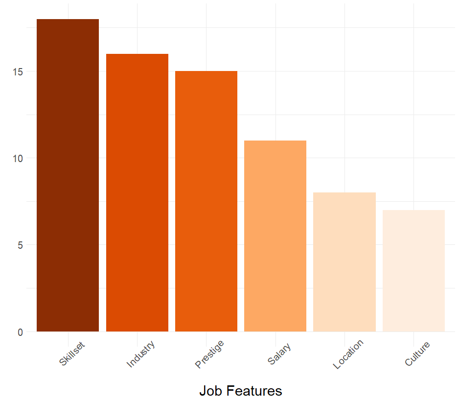
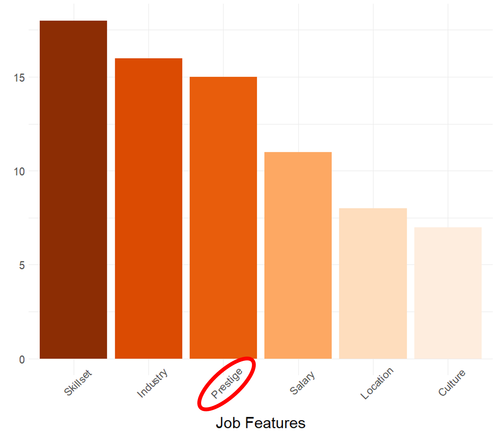

1. Background and problem statement
2. Solution
3. Summary and further action
but...
"What do you look for in a job?" 
"Describe your TalentConnect experience in one word."
Confusing
| Problem | Solution |
|---|---|
| Too many available jobs to search through | Use more data points to generate relevant recommendations for users |
| Overwhelming number of filters | |
| Current job recommendations may be irrelevant |
←
→
"What do you look for in a job?" 
←
→
1. Converting words to numbers
2. Finding relevant jobs
1. word2vec
2. TF-IDF
(term frequency-inverse document frequency)
1. Cosine similarity
2. KNN
(K-nearest neighbours)
Collect
(from both students and employers)
←
→